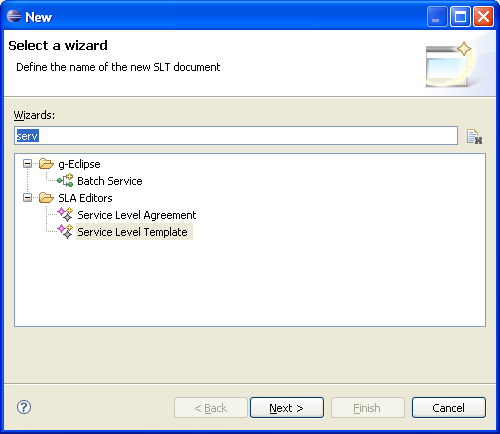
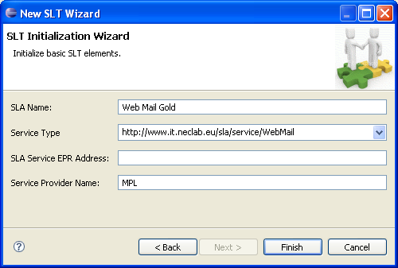
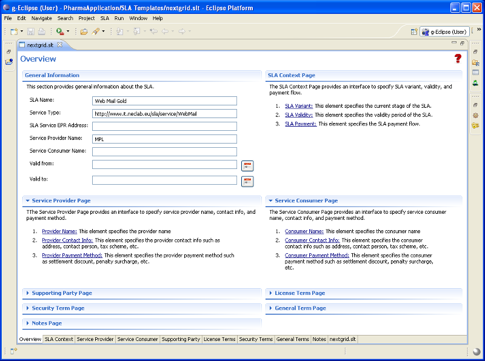
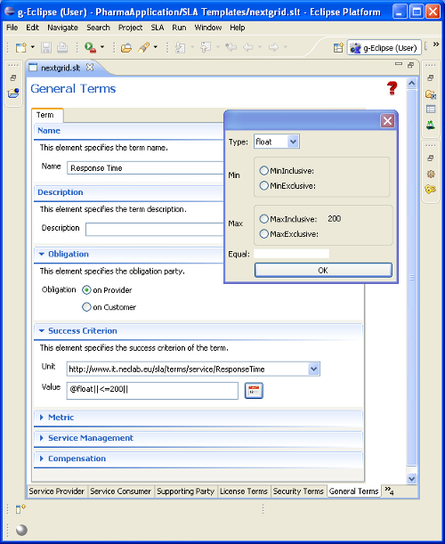

The g-Eclipse framework hosted at Eclipse.org does NOT come with a SLA editor due to licensing issues. But from the g-Eclipse project webpage (www.geclipse.eu) an implementation for the SLA schema from the NextGRID project is available. This editor is described briefly in the following section.
Start the SLT wizard by selecting "New... Others ... Service Level Template" as shown in the next picture.
On the next wizard page you give the document a name with the extension *.slt. Then you have to specify the Service Type and a Name for this service as shown on the next wizard page and you click finish.
Now the SLA Editor for the NextGRID schema starts and the following main page is presented. The Editor is a multi-tab editor. The different tabs can be selected by the tab of by the links on the main page. The SLA document is based on the NextGRID SLA XML schema and can be accessed directly with the more right tab.
With the tab "General Terms" the provider can enter his promised service level terms. The most important fields are the name, obligation and the success criteria. The user can select from a list of possible criterias and enter the values for success by clicking on the icon right from the value text field. 
In order to add or remove a service term, the user right-click on the tab "Term" and selects the corresponding action.